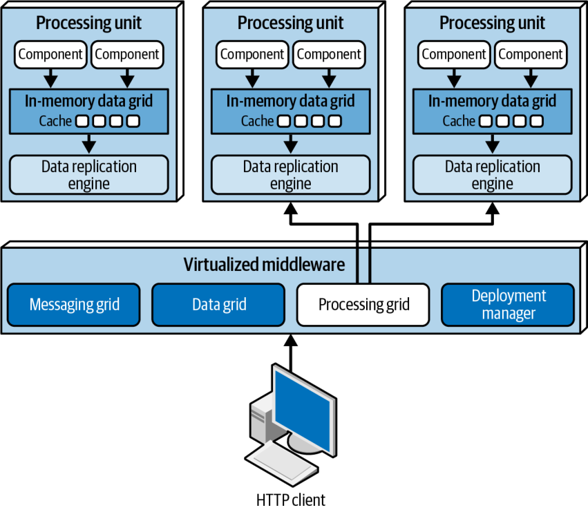
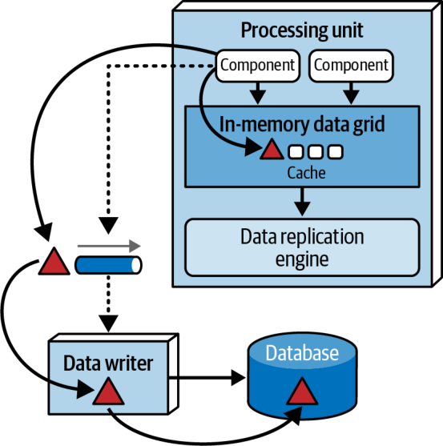
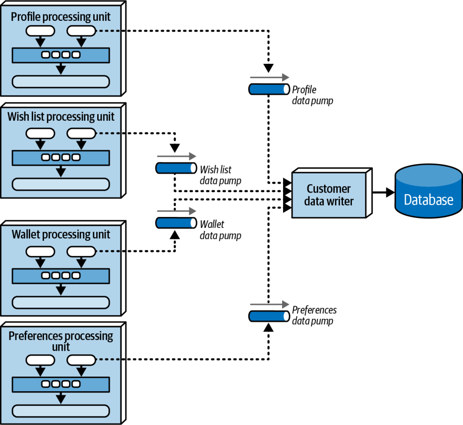

ویژگیهای خاصِ سبک (ادامه)
شبکهٔ داده (ادامه)
ملاحظات کش نزدیک
کش نزدیک (near-cache) یک مدل کشگذاریِ ترکیبی است که شبکههای دادهٔ درونحافظهای را با یک کش توزیعشده پیوند میدهد. در این مدل (که در شکل ۱۶-۸ نشان داده شده)، کش توزیعشده کش پشتیبانِ کامل (full backing cache) نامیده میشود و هر شبکهٔ دادهٔ درونحافظهای که درون یک واحد پردازش جای دارد، کش جلویی (front cache) نام دارد. کش جلویی همواره زیرمجموعهٔ کوچکتری از کش پشتیبانِ کامل را در بر دارد و از یک سیاست بیرونرانی (eviction policy) استفاده میکند تا اقلام قدیمیتر را حذف کند و جا برای افزودنِ اقلام تازهتر باز شود. کش جلویی سه گزینهٔ سیاست بیرونرانی دارد: کش «تازهترین استفاده» (most recently used) که اقلامی را در بر دارد که از همه تازهتر به کار رفتهاند؛ کش «پرتکرارترین استفاده» (most frequently used) که اقلامی را در بر دارد که بیش از همه به کار رفتهاند؛ یا سیاست بیرونرانیِ جایگزینیِ تصادفی (random replacement) که هر گاه به فضا نیاز باشد، اقلام را بهطور تصادفی حذف میکند. جایگزینیِ تصادفی سیاست بیرونرانیِ خوبی است، هنگامی که هیچ تحلیل روشنی از دادهها دلیلی برای نگهداشتنِ اقلامِ اخیراً بهکاررفته یا پرتکرارترین اقلام به دست نمیدهد.

هرچند کشهای جلویی همواره با کش پشتیبانِ کامل همگام نگه داشته میشوند، کشهای جلوییِ درون هر واحد پردازش با کشهای واحدهای پردازشِ دیگری که همان دادهها را به اشتراک میگذارند همگامسازی نمیشوند. این یعنی چندین واحد پردازش که بافتار دادهٔ یکسانی (مانند نمایهٔ مشتری) را به اشتراک میگذارند، به احتمال زیاد هر کدام دادههای متفاوتی در کش جلوییِ خود خواهند داشت. این امر میان واحدهای پردازش ناهمسانیهایی در کارایی و پاسخگویی پدید میآورد، از این رو استفاده از مدل کش نزدیک را در معماری مبتنی بر فضا توصیه نمیکنیم.
شبکهٔ پردازش
شبکهٔ پردازش، که در شکل ۱۶-۹ نشان داده شده، مؤلفهای اختیاری درون میانافزار مجازیشده است که هر گاه چندین واحد پردازش در یک درخواست کسبوکاریِ واحد دخالت داشته باشند، پردازش درخواستِ ارکسترهشده را مدیریت میکند. اگر درخواستی به هماهنگی میان بیش از یک نوع واحد پردازش نیاز داشته باشد (مانند یک واحد پردازش سفارش و یک واحد پردازش پرداخت)، شبکهٔ پردازش میان آن دو واحد پردازش میانجیگری میکند و درخواست را ارکستره میکند.

بیشتر پیادهسازیهای مدرنِ مبتنی بر فضا (بهویژه آنهایی که سرویسهای ریزدانه دارند) کارکرد شبکهٔ پردازش را بهجای یک موتور ارکستراسیونِ (orchestration engine) درشتدانهٔ واحد، از راه واحدهای پردازشِ ارکستراسیونِ جداگانه و ریزدانه پیادهسازی میکنند، به گونهای که هر واحد پردازشِ ارکستراسیون یک گردشکارِ اصلیِ واحد را رسیدگی کند. برای یک نمونهٔ تجارت الکترونیک، فرض کنید وقتی مشتری سفارشی ثبت میکند، سه واحد پردازش باید با هم هماهنگ شوند: ثبت سفارش، پرداخت و تعدیل موجودی. معمار میتواند یک واحد پردازشِ «هماهنگکنندهٔ ثبت سفارش» بسازد تا این سه واحد پردازش را ارکستره کند. او همچنین ممکن است واحدهای پردازشِ ارکستراسیونِ جداگانهای برای دیگر گردشکارهای اصلی بسازد، مانند رسیدگی به سفارشهای مرجوعی و تأمین دوبارهٔ موجودیِ انبار.
مدیر استقرار
مؤلفهٔ Deployment Manager راهاندازی و خاموشکردنِ پویای نمونههای واحد پردازش را بر پایهٔ شرایط بار مدیریت میکند. این مؤلفه پیوسته زمانهای پاسخ (response times) و بار کاربران را پایش میکند، هنگام افزایش بار واحدهای پردازشِ تازهای راهاندازی میکند و هنگام کاهش بار واحدهای پردازش را خاموش میکند. این مؤلفه برای دستیابی به مقیاسپذیریِ متغیر (کشسانی) در یک برنامه حیاتی است. بیشتر زیرساختهای مبتنی بر ابر این مسئولیت را بر عهده میگیرند، همانگونه که محصولات ارکستراسیون سرویس مانند Kubernetes نیز این کار را انجام میدهند.
پمپهای داده
پمپ داده راهی برای فرستادنِ داده به پردازندهٔ دیگری است که آن پردازنده سپس پایگاهداده را بهروز میکند. معماریهای مبتنی بر فضا به پمپ داده نیاز دارند، زیرا واحدهای پردازش مستقیماً از پایگاهداده نمیخوانند و در آن نمینویسند. پمپهای داده در معماری مبتنی بر فضا همواره ناهمگاماند و سازگاری نهایی میان کش درونحافظهای و پایگاهداده را فراهم میکنند. هنگامی که یک نمونهٔ واحد پردازش درخواستی دریافت میکند و کش خود را بهروز میکند، آن واحد پردازش مالکِ آن بهروزرسانی میشود و از این رو مسئول است آن را از راه پمپ داده بفرستد تا پایگاهداده سرانجام بهروز شود.
پمپهای داده در معماری مبتنی بر فضا معمولاً با پیامرسانی پیادهسازی میشوند؛ چنانکه در شکل ۱۶-۱۰ نشان داده شده است.

پیامرسانی نهتنها از ارتباط ناهمگام، بلکه از تحویل تضمینشده، ماندگاری پیام (message persistence) و ترتیب پیام (message order) نیز، از راه صفبندیِ «نخست وارد، نخست خارج» (FIFO)، پشتیبانی میکند. افزون بر این، پیامرسانی واحد پردازش و نویسندهٔ داده را از هم جدا میکند، به گونهای که اگر نویسندهٔ داده در دسترس نباشد، پردازش درون واحدهای پردازش قطع نمیشود.
بیشتر معماریهای مبتنی بر فضا چندین پمپ داده دارند. معمولاً هر پمپ به یک حوزه یا زیرحوزهٔ مشخص (مانند مشتری یا موجودی) اختصاص دارد، اما میتوان آنها را به هر نوع کش (مانند CustomerProfile، CustomerWishlist و مانند آن) یا به یک حوزهٔ واحد پردازش (مانند Customer) که کش عمومیِ بسیار بزرگتری نیز دارد اختصاص داد.
پمپهای داده معمولاً قرارداد دارند که شامل یک کنش مرتبط با دادههای قرارداد (افزودن، حذف یا بهروزرسانی) است. قرارداد میتواند یک طرحوارهٔ JSON، یک طرحوارهٔ XML، یک شیء یا حتی یک پیام ارزشمحور (value-driven message) باشد (یعنی یک پیام نگاشتی (map message) که جفتهای نام-مقدار را در بر دارد). در بهروزرسانیها، محمولهٔ پیامِ پمپ داده معمولاً تنها مقادیر تازهٔ داده را در بر دارد. برای نمونه، اگر مشتری شمارهٔ تلفن نمایهٔ خود را تغییر دهد، تنها شمارهٔ تلفن تازه، همراه با شناسهٔ مشتری و کنشی برای بهروزرسانیِ داده، فرستاده میشود.
نویسندههای داده
مؤلفهٔ Data Writer پیامها را از یک پمپ داده میپذیرد و پایگاهداده را با اطلاعاتِ محمولهٔ آنها بهروز میکند (شکل ۱۶-۱۰ را ببینید). نویسندههای داده را میتوان بهصورت سرویس، برنامهٔ کاربردی یا هاب داده (data hub) (مانند Ab Initio) پیادهسازی کرد. دانهبندیِ آنها بسته به دامنهٔ پمپهای داده و واحدهای پردازش میتواند متفاوت باشد.
نویسندهٔ دادهٔ حوزهمحور (domain-based data writer) منطق پایگاهدادهایِ لازم برای رسیدگی به همهٔ بهروزرسانیهای درون یک حوزهٔ مشخص (مانند پردازش سفارش) را در بر دارد، صرفنظر از اینکه از چند پمپ داده میخواند. سیستم شکل ۱۶-۱۱ چهار واحد پردازشِ متفاوت و چهار پمپ دادهٔ متفاوت برای نمایش حوزههای مشتری (Profile، WishList، Wallet و Preferences) دارد، اما تنها یک نویسندهٔ داده. همان نویسندهٔ دادهٔ واحدِ مشتری به هر چهار پمپ داده گوش میدهد و منطق پایگاهدادهای (مانند SQL) لازم برای بهروزرسانیِ دادههای مربوط به مشتری در پایگاهداده را در بر دارد.

راه دیگر این است که هر دسته از واحدهای پردازش مؤلفهٔ Data Writer اختصاصیِ خود را داشته باشد؛ چنانکه در شکل ۱۶-۱۲ نشان داده شده است. در این مدل، هر نویسندهٔ داده به یک پمپ دادهٔ متناظر اختصاص دارد و تنها منطق پردازش پایگاهدادهایِ همان واحد پردازشِ مشخص (مانند Wallet) را در بر دارد. هرچند این مدل معمولاً مؤلفههای نویسندهٔ دادهٔ فراوانی پدید میآورد، مقیاسپذیری و چابکیِ بهتری فراهم میکند، زیرا واحد پردازش، پمپ داده و نویسندهٔ داده را با هم همراستا میکند.